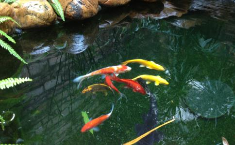

时光荏苒，人生如梦，在不知不觉中，我接触佛法到放生已经有几年了，自己也从一个懵懵懂懂的束缚于生活与无明的凡夫俗子，升华为一个心怀感恩的佛门弟子，这几年看到各位师兄的感应文章，再回顾自己的学佛历程时，也有过心怀千言一吐为快的冲动，但自己却一直疏于动笔，主要是觉得自己文字功底比较差，人也比较懒，但师兄们一篇又一篇的心灵美文让我同沾法喜的同时也深受鼓舞，也自告奋勇写一篇文章聊一下自己的学佛和放生的历程，愿以此增强各位同修的信心，也希望更多的人能加入到放生队伍中来，一同领略佛法的慈悲和魅力！
我放生这几年来真可谓感悟良多，无论从心理上还是从生活上都对我的人生有一个很大的改观，当我试着一件件梳理过去往事的时候，很是惊奇的发现种种的感应无处不在，有的自己都感觉不可思议，却又那样的真切，或许在某些人看来这些都只是心理作用而已，但他们的出现一次又一次的加深了我对生活和佛法的信心，一次又一次的激励着我为成为一个正信的佛弟子而不懈的努力着。直到动笔的现在我都觉着内心似乎有股暖流涌动，我对佛菩萨和师父的慈悲教导而感恩，也为自己这几年的转变而感动！
记得有一年儿子生日，恰逢寺院组织放生。作为一个母亲能在儿子生日当天放生，以这样一种特殊的方式帮儿子祈福，真的让我兴奋不已。放生前一晚就做了一个非常殊胜的梦，梦见我在一个透明的大圆筒里，周围很多鱼在很快乐地围着我转，好像在感恩我给他们放生，观世音菩萨现身上方为我和鱼儿们加持，那是我梦中第一次出现观世音菩萨，当时心情异常激动。醒后心中的兴奋仍未退去，只是觉得有些奇怪，怎么会梦到观世音菩萨，而不是阿弥陀佛呢？（我之前放生都是请的阿弥陀佛像，日常功课也是念佛为主），到了寺院放生时，发现当天迎请的居然就是观世音菩萨像，那种感觉很神奇也让我惊讶不已。这或许就是冥冥之中观世音菩萨的加持，抑或是我与菩萨的深厚缘分，自此之后的放生，每次迎请的都是观世音菩萨像。
第二件事，有天晚上于半梦半醒之间，非常清晰地梦见一个比儿子大的男孩子从我床上起来走了，长得和儿子很像，看得出他对我没有仇恨，也没有特别的喜悦，只是告诉我最好做一场法事，当时的感觉就是以前流产的孩子，但醒来后整个人轻松很多，我想这大概是把他度走了吧。（这是否和我参加放生有关。是不是通过放生，长养慈悲，化解了很多之前的冤亲债主呢。）
第三件事就是儿子今年高考参加了自主招生考试，今年各高校自主招生很严格，能够通过的比例比较低。我们这边报名的有三十多人，但真正通过的也就三个，最关键的是这三个学生的家长都是信佛的，我和另一位学生家长参加放生已经有几年了，剩下的一位学生家长也经常去开福寺做义工。我们家长自己都很清楚，这三个孩子在这三十多位学生中并不是最优秀的，能够从众多的考子中脱颖而出，通过严格的考试，或许可以说有运气的成分，但幸运如此巧合的垂青放生和佛法结缘的家庭，或许用佛力加持来解释最为合适吧。
第四件事，就是从参加放生以来，我觉得自己的性格变了好多，因为十年前婚姻解体的关系，我一直沉溺在痛苦之中不能自拔，觉得自己很委屈，想不明白为啥我一心想做贤妻良母，全心全意为爱付出，为家付出，却还是遭遇背叛，一度处于自我折磨中，内分泌也失调，对人也产生了信任危机，对我的前夫充满了仇恨。自从参加放生后，每次看到师兄们我就觉得很亲切，很放松，内心趋于平静，同师兄们接触也是带着完全的信任，通过融入这样一个融洽和谐的团队，自己也从痛苦中慢慢走了出来，精神状态也变得非常好，同事关系也变得非常和谐。在放生过程中，也想明白了很多事情：我们认为自己善良，却往往在餐桌上要吃现杀的鱼；甚至为了现有的物质与名利，去堕胎、流产，美其名曰，国家计划生育不允许；我们打着爱的名义苦苦纠缠，却不能放手做到真诚祝福。
通过放生，才让人明白，我们之前所谓的善良，跳不出我们内心自我的范畴，而我们的自我，同佛菩萨广大如虚空的慈悲心相比，真的太渺小了，无怪乎“善良”却总是遭遇挫折。也通过放生，我们的心量在扩大，慈悲心在长养，生活中的“福报”，终会是水到渠成、自然而然的事情。佛门六度波罗蜜，第一是布施，而放生具足圆满“财布施，法布施和无畏布施”三种功德，自是培福增慧第一“法宝”。自放生后，我的经济收入在不断增加，手头上也有些余钱，以前都是负债度日。
儿子也比以前听话了，饮食上也不再像以前那样无肉不欢；家里有蟑螂之类的，他也能坦然地置之不理了，以前可是看见了一定会打死的；出门也会帮我背背包，也会哄他外婆开心了，以前可是把老人往回撵呢（主要是老人看到他有些事情做得不对唠叨他）。看到同事为他的女儿头痛，我就劝他学佛放生，也许是机缘不成熟，他始终不信，看到他很痛苦，在庆幸自己选择了正确方向的同时，又为众生业障加身、福报浅薄而心痛。放生，对我的影响，不仅仅体现在感应、福报等方面，生活中的点滴，思维中的相续，都在体现着放生给我带来正能量的影响。
上周放生的时候，我迟到了，但却捡了四条鱼，其中一条小鱼身子已经被分割成三截了，仅有一点点皮肉相连，看着它，我感觉到生命的脆弱，把它捡起放到我们的放生箱里，希望它能籍此因缘在佛力的加持下，来生勿入恶道，得闻佛法早日能脱离生死苦海。
看到电台在播放的变形计，很突发奇想地想如果有人能够拍一个人和动物的变形多好，让那些屠夫做一个案板上的鱼，切身体会一下那撕心裂肺的痛楚之后也许他们就会放下屠刀了。其实，在佛菩萨的眼里，众生在六道轮回中不停上演变形记，只因我们慧眼未开，所以看不到。屠夫今生做人，如果不能放下屠刀，下辈子就不知道堕落何处了。也许他与被杀动物之间互换角色，今生债下生还，在杀与被杀之间，冤冤相报，无始无终，可悲可叹。
放生使我重获新生，以上是我放生以来的真实感受和经历。非常庆幸自己今生能闻佛法，也切实感受到佛法所言真实不虚。这么多师兄能坚持放生这么多年，其内在动力，无非是本有的慈悲佛性，当我们通过放生将佛性一点点挖掘出来，最后身心充满，这才是真正幸福和快乐所在。
感恩师兄们的发心护持和多年来风雨无阻的参与放生，感恩一切！阿弥陀佛。